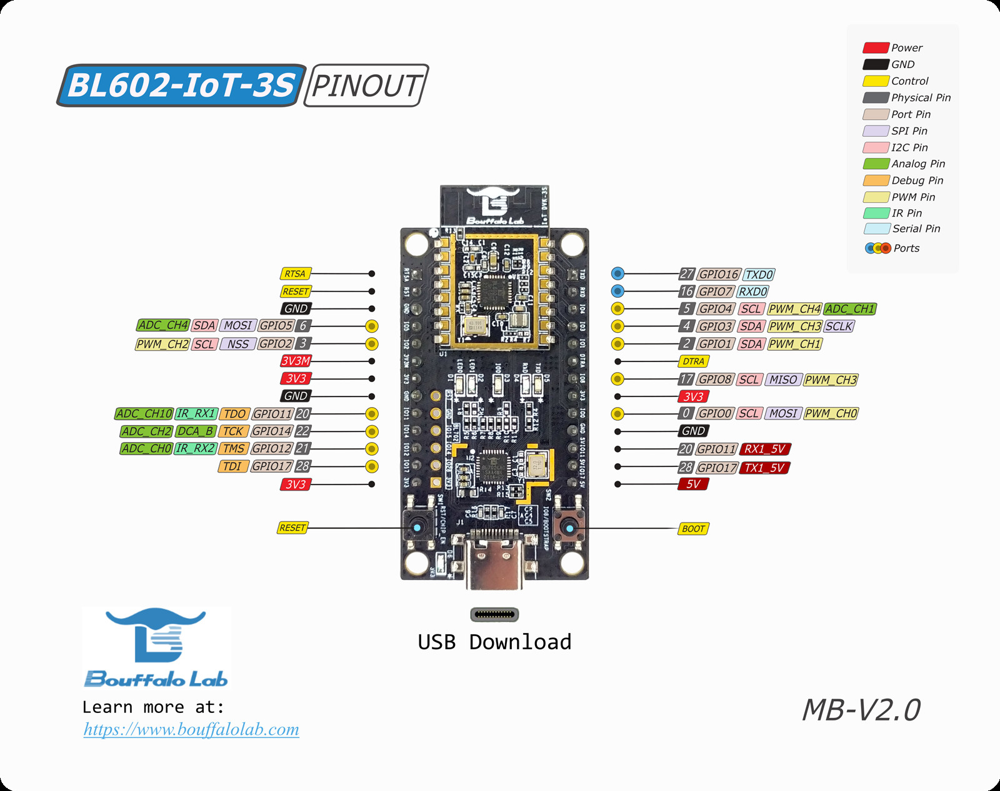
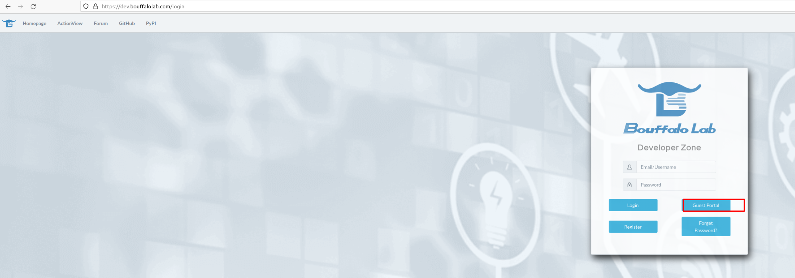
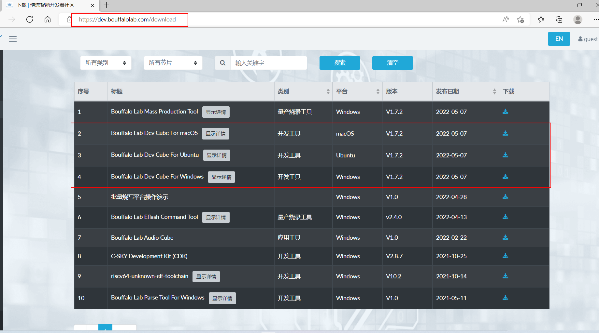
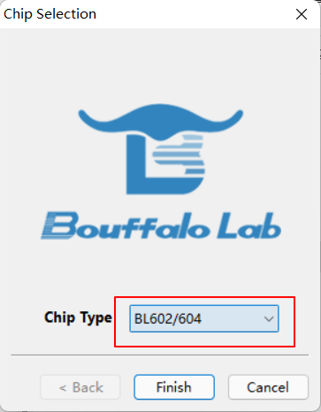
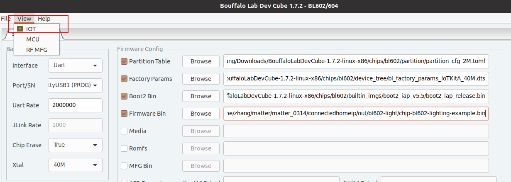
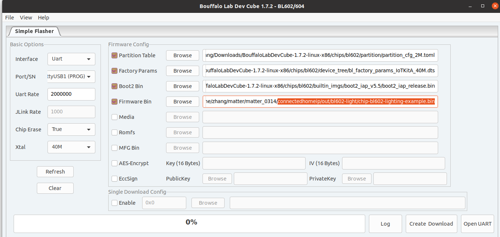

BL602
Contents
BL602#
This example functions as a wifi light bulb device type, with on/off capabilities. The steps were verified on BL602-IoT-DVK-3S board.
BL602-IoT-DVK-3S 
Initial setup#
Setting up the environment on ubuntu 20.04 or 18.04
$ sudo apt-get update
$ sudo apt-get upgrade
$ sudo apt-get install git gcc g++ python pkg-config libssl-dev libdbus-1-dev libglib2.0-dev libavahi-client-dev ninja-build python3-venv python3-dev python3-pip unzip libgirepository1.0-dev libcairo2-dev bluez avahi-daemon
$ sudo apt-get install pi-bluetooth (if not raspberry pi, sudo apt-get install bluetooth)
$ reboot
Clone and initialize the connectedhomeip repo
git clone https://github.com/project-chip/connectedhomeip.git
cd connectedhomeip
git submodule update --init --recursive
Install packets
$ cd {path-to-connectedhomeip}
connectedhomeip$ source ./scripts/bootstrap.sh
connectedhomeip$ source ./scripts/activate.sh
Build the image#
Build the example application:
connectedhomeip$ ./scripts/build/build_examples.py --target bl602-light buildGenerated files
connectedhomeip/out/bl602-light/chip-bl602-lighting-example.binTo delete generated executable, libraries and object files use:
$ cd ~/connectedhomeip/ $ rm -rf out/
Flash the board#
Download Bouffalo Lab Dev Cube.
Log in to the site as a guest.
 
run the software :
 The following picture shows the burning interface. To download the firmware, you need to enter the download mode: press and hold the Boot (IO8) pin of the development board, press the RST button, and then release the Boot button to enter the burning and downloading mode.
Notice: Latest version Bouffalolab dev cube is recommended.
Factory Params:
BouffaloLabDevCube-1.7.2-linux-x86/chips/bl602/device_tree/bl_factory_params_IoTKitA_40M.dts
Partition Table:
BouffaloLabDevCube-1.7.2-linux-x86/chips/bl602/partition/partition_cfg_2M.toml
Boot2 Bin:
BouffaloLabDevCube-1.7.2-linux-x86/chips/bl602/builtin_imgs/boot2_iap_v5.5/boot2_iap_release.bin
Firmware Bin: connectedhomeip/out/bl602-light/chip-bl602-lighting-example.bin
Partition Table：
FW: The size of FW size0 must be larger than the bin size, we can do it by reducing the size of FW size1 and media partition size0.
COM Port:
ls -la /dev/ttyUSB*
select the big one.
Validate the example#
1.The device should present itself as a USB serial device on your computer. You
may look it up in /dev/:
ls -la /dev/tty*
You can open the serial console. For example, if the device is at /dev/USB1:
picocom -b 2000000 /dev/ttyUSB1
To reset the board, press the RST button. And you will see the log from the demo board.
Commission a device using chip-tool#
To initiate a client commissioning request to a device, run the built executable and choose the pairing mode.
Commissioning over BLE#
Run the built executable and pass it the discriminator and pairing code of the remote device, as well as the network credentials to use.
The command below uses the default values hard-coded into the debug versions of the BL602 lighting-app to commission it onto a Wi-Fi network:
$ sudo ./chip-tool pairing ble-wifi 1 ${SSID} ${PASSWORD} 20202021 3840
Parameters:
1. Discriminator: 3840
2. Setup-pin-code: 20202021
3. Node ID: 1
4. SSID : Wi-Fi SSID
5. PASSWORD : Wi-Fi Password
Cluster control#
After successful commissioning, use the OnOff cluster commands to control the OnOff attribute. This allows you to toggle a parameter implemented by the device to be On or Off.
$ sudo ./chip-tool onoff on 1 1Use ColorControl cluster command to control the color attributes:
$ sudo ./chip-tool colorcontrol move-to-hue-and-saturation 240 100 0 0 0 1 1